1. PHÂN LOẠI PHẦN TỬ KHỐI VÀ NỘI TUYẾN
Các thẻ (hay phần tử) html được chia làm hai loại, khối (block level) và nội tuyến (inline level).
Các phần tử khối thường bắt đầu từ đầu hàng và kéo dài suốt chiều rộng của trang web. Trong ví dụ ở hình 16.1, dòng chữ Thư Bác Hồ gửi học sinh được thể hiện ở dạng khối.
Các phần tử nội tuyến là các phần tử nhúng bên trong một phần tử khác. Trong ví dụ ở hình 16.1, cụm từ Việt Nam là một phần tử nội tuyến, được nhúng trong phần tử p.
Mặc định các phần tử HTML sẽ thuộc một trong hai loại khối hoặc nội tuyến (Bảng 16.1).
Chúng ta có thể thay đổi loại phần tử HTML bằng thuộc tính display. Các giá trị của thuộc tính này bao gồm block, inline, none. Giá trị none sẽ làm ẩn (không hiển thị) phần tử này trên trang web. Ví dụ CSS sau sẽ đổi loại phần tử span từ dạng mặc định là inline sang block.
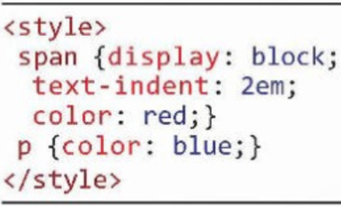Kết quả áp dụng mẫu CSS trên được minh họa trong Hình 16.2.
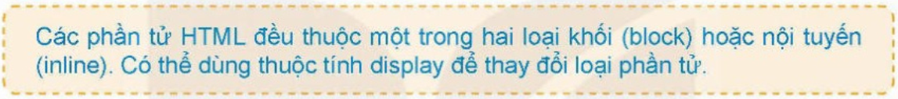
2. THIẾT LẬP ĐỊNH DẠNG KHUNG BẰNG CSS
Trong hoạt động tiếp theo các em sẽ được làm quen với cách định dạng khung, viền cho các phần tử HTML của trang web. Cần phân biệt hai loại phần tử HTML, phần tử khối và phần tử nội tuyến. Với phần tử dạng khối, các khung được xác định với đầy đủ tính chất, còn với các phần tử nội tuyến thì khung chỉ có thể thiết lập mà không có các thông số chiều cao, chiều rộng.
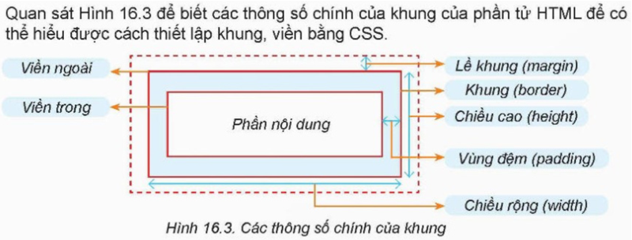Các thuộc tính liên quan đến khung của một phần tử HTML được mô tả trong Bảng 16.2. Lưu ý các thuộc tính này đều không có tính kế thừa.
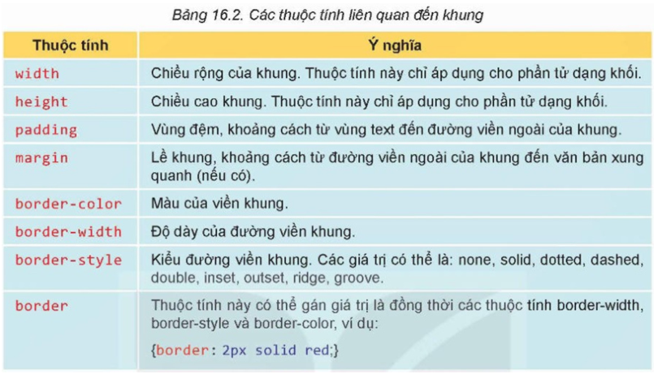Cho một đoạn mã HTML như sau:
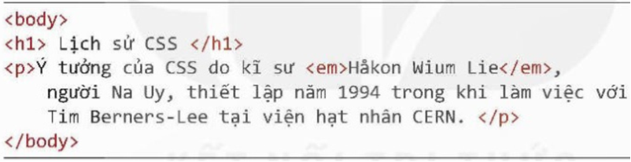Nếu thiết lập mẫu định dạng như Hình 16.4a cho đoạn mã HTML ở trên thì kết quả nhận được tương tự như Hình 16.4b.
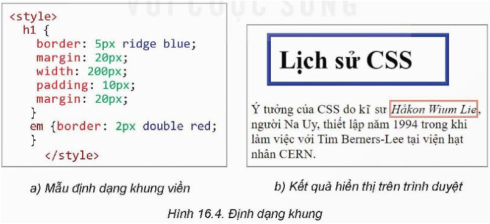3. MỘT SỐ BỘ CHỌN ĐẶC BIỆT CỦA CSS
a. Thiết lập bộ chọn là một lớp các phần tử có ý nghĩa gần giống nhau
Trong thực tế, có thể có nhu cầu định dạng cho một nhóm phần tử có cùng ý nghĩa, ví dụ các đoạn văn bản có liên quan đến một sự kiện nào đó hoặc một số đoạn văn bản quan trọng cần nhấn mạnh. Trong các trường hợp này, thiết lập bộ chọn lớp class cho các phần tử đó để có thể thiết lập định dạng chung. Cấu trúc chung của định dạng CSS liên quan đến lớp:
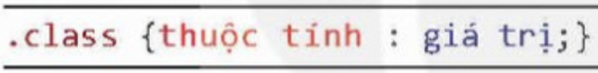Ví dụ một số bộ chọn lớp CSS như sau:
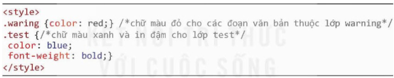Ví dụ đoạn mã HTML sau được áp dụng mẫu CSS ở ví dụ trên thì đoạn văn bản thứ nhất có chữ màu xanh và in đậm, đoạn văn bản thứ hai có chữ màu đỏ.
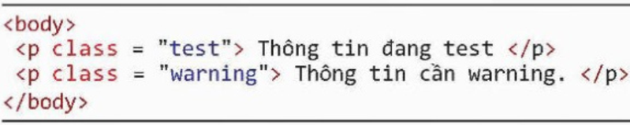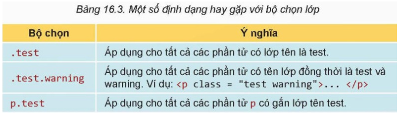
b. Thiết lập bộ chọn riêng cho từng phần tử riêng biệt có mã định danh id
Chúng ta đã biết cách thiết lập và gắn mã định danh id cho từng phần tử trong tệp HTML. Mỗi phần tử chỉ có một mã định danh id duy nhất trong một trang web. CSS cho phép thiết lập các mẫu định dạng với các phần tử có id tương ứng như sau:
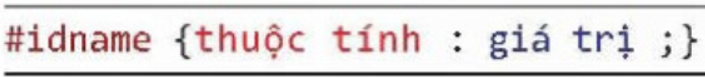Ví dụ một số mẫu định dạng id như sau:
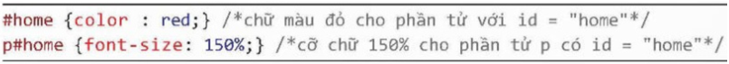c. Thiết lập bộ chọn thuộc tính CSS
Một tính chất quan trọng khác của CSS là có thể thiết lập bộ chọn là thuộc tính. Các định dạng này sẽ được thiết lập và áp dụng cho các phần tử nếu được gắn với thuộc tính cụ thể nào đó. Sau đây là ví dụ định dạng CSS loại này:
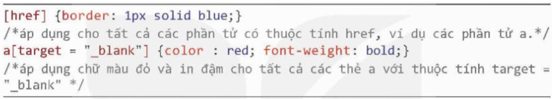 Lưu ý: Khi đặt tên cho id và class:
- Tên của id và class phân biệt chữ in hoa, in thường.
- Tên bắt buộc phải có ít nhất một kí tự không là số, không bắt đầu bằng số, không chứa dấu cách và các kí tự đặc biệt khác.
- Một phần tử có thể thuộc nhiều lớp khác nhau. Để khai báo, chúng ta đặt các tên lớp cách nhau bởi dấu cách.
Trong ví dụ sau phần tử p thuộc đồng thời ba lớp là “test”, “more” và “once”.
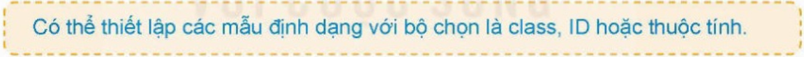